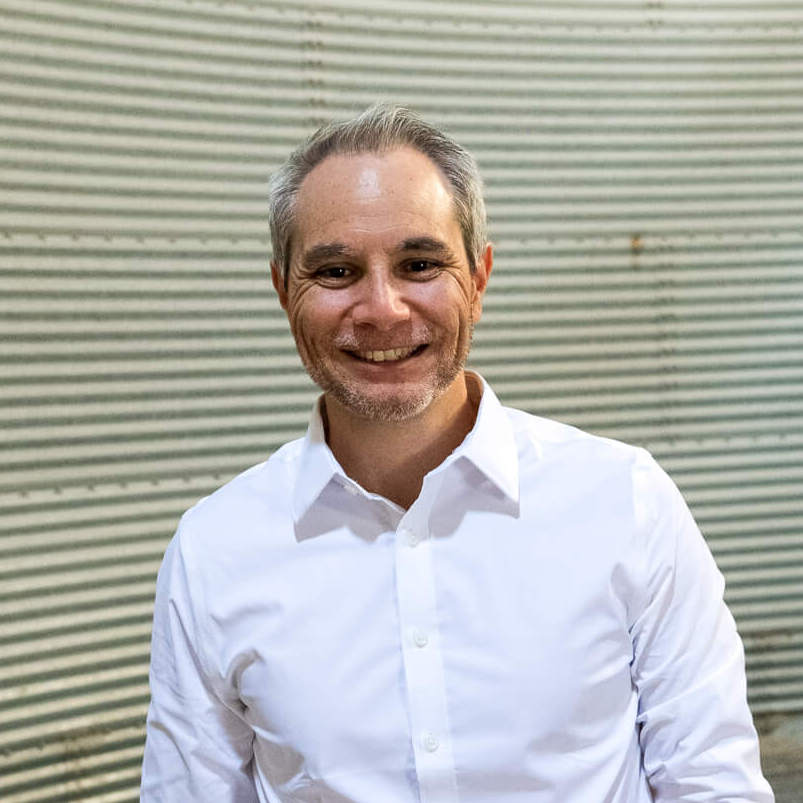

Over the past several years, I have had many conversations with friends and family who know I have a technology background. Many times they would ask me to problem-solving something through technology. The conversation would inevitably lead to the question, "Do you know how to code?" or " Do you know how to program x, y, and z?"
I figured I'd try to learn how to program independently. At first, it seemed easy, but as I progressed through different learning modules, it didn't make sense, and I had many questions. I exhausted my competence in trying to problem-solve the situation on my own.
It made logical sense that I needed more human interaction to learn how to program. My journey is just beginning, and what better way to start 2023 than by attending Coding Temple.
My Story
"I feel that the moment you think you've got it figured out, then you should tell yoursefl there's somehitng wrong. You always need to keep innovating."
~ Sir Alex Ferguson

I grew up in a multicultural family, born and raised in Bangkok, Thailand.
My multicultural upbringing was unique to say the least, education and living in Thailand and summer holiday in the United States. However, my experience was not average because many kids in my generation grew up and spent all their youth living in one location.
Most of my youthful hours were spent on some competitive playing surface. However, I quickly learned that I enjoyed the competition and the training that bettered myself and the team.
The city of Bangkok was a catalyst for my childhood upbringing into a young adult.
I attended university in the U.S. My adaptability to go from a diverse population of millions to a small city of tens of thousands in the Midwest served me well as I went on to become a teacher and coach locally.
For several years, I shaped adolescents' minds both in a classroom and on a playing field. While in my fourth year of teaching, I already asked myself questions about myself: continue in the same role and same organization till I retire. In my sixth year of teaching, I became an educational IT coach/consultant. This was the transformation I needed to press on in my life's journey.
My continued sense of adventure and change was calling me to teach elsewhere.
I had a humbling opportunity to work in China, where I facilitated a shift in educational pedagogy from a traditional model to more contemporary practices.
The skills that I acquired as an innovation coach in China allowed me to eventually return to Thailand to work with students and staff to develop 21st-century teaching and learning skills.
During my time in Thailand, I helped start two companies and began coaching and consulting with clients in education and beyond.
My Key Insights:
Change is adamant but requires temperance to move forward
Courage is an unforeseen superpower
There is a time to listen and learn and a time to educate
If you say you are going to do something it's called a promise
Growth is the difference between the words, yet and can't